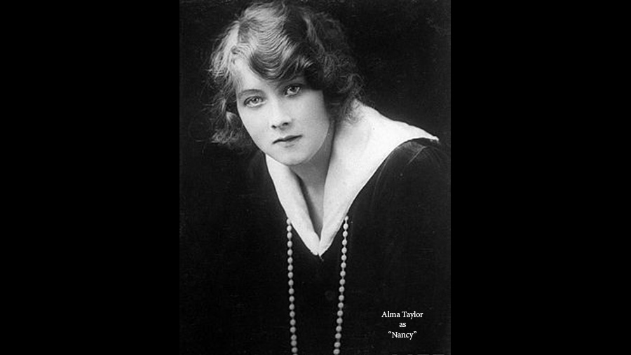

| Character | Actor |
|---|---|
| Oliver Twist | Ivy Millais |
| Fagin | John McMahon |
| Bill Sikes | Harry Royston |
| Nancy | Alma Taylor |
| Mr. Brownlow | E. Rivary |
| Rose Maylie | Flora Morris |
| Jack Dawkins, "The Artful Dodger" | Willie West |
| Role | Person |
|---|---|
| Director | Thomas Bentley |
| Screenplay | Thomas Bentley |
A 1912 British silent drama film directed by Thomas Bentley and starring Ivy Millais, Alma Taylor and Harry Royston. It was the directorial debut of Bentley, who went on to become a leading British director (Hobson's Choice, Royal Cavalcade etc), and was the first in a series of Dickens adaptations by Bentley.